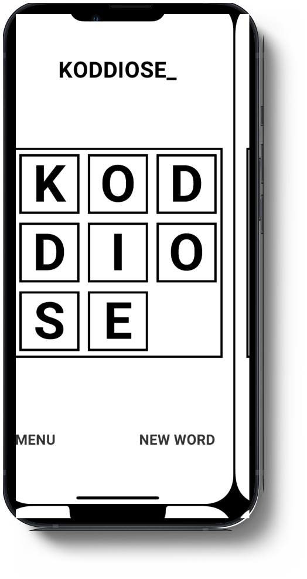
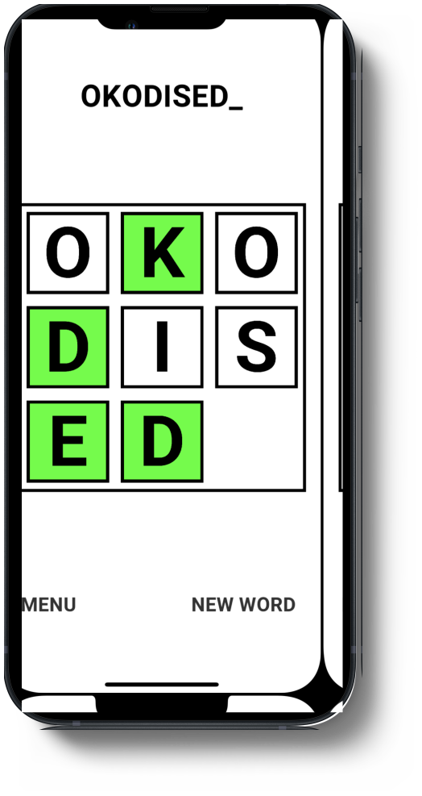

LetterSlides in Action
 
Building LetterSlides
My goal was to make a simple and fun puzzle game that anyone can play on their mobile device. I chose to use Unity to make LetterSlides because of the multi-platform support.
- Created the main game components, controls and shuffling features.
- Customized the tiles to represent a letter in a word and light up green when placed in the correct position.
- Built a save/load feature so the game could keep track of solved puzzles.
- Created a large list of words and definitions using a custom script to create a csv file to load into the game.
- Implemented a dictionary feature to show the growing list of completed puzzles. I used a recycling scroll view for improved performance when displaying a large amount of text.
I built this game in 5 stages:
Randomizing the shuffling
To randomly shuffle the puzzle requires counting the number of "inversions" that have occurred.
In a sliding puzzle an inversion is defined as a mis-ordering of the tiles.
This means the tiles in the array have been swapped from their correct positions.
The shuffling occurs in a do-while loop and stops when the inversion count is an even number.
To get the number of inversions requires counting the swaps that have taken place.
This is done by taking the array and using two pointers at the first and second index often denoted as "i" and "j".
Using a nested loop, the pointers are compared and an inversion is counted if the index at "i" is greater then "j".
The loop will go over the entire array and compare "i" and "j" for each index adding up the inversion count. After the loop has completed
and the inversion count is an even number, the 3x3 puzzle is solvable and the shuffling can stop.